Maven就是是专门为Java项目打造的管理和构建工具，它 提供了一套标准化的项目结构、提供了一套标准化的构建流程等等。
分模块开发
分模块开发设计
1、按照功能拆分：如果把不同业务场景的模块代码放入到一个项目，那么当其中某一个模块代码出现问题，就会导致整个项目无法正常启动，从而导致多个业务都无法正常运行。所以我们会按照功能将项目进行拆分。
2、按照模块拆分：比如电商的项目中，有订单和商品两个模块，订单中需要包含商品的详细信息，所以需要商品的模型类，商品模块也会用到商品的模型类，这个时候如果两个模块中都写模型类，就会出现重复代码，后期的维护成本就比较高。我们就想能不能将它们公共的部分抽取成一个独立的模块，其他模块要想使用可以像添加第三方jar包依赖一样来使用我们自己抽取的模块，这样就解决了代码重复的问题，这种拆分方式就说我们所说的按照模块拆分。
我们可以将原始模块按照功能拆分成若干个子模块，方便模块间的相互调用，接口共享：
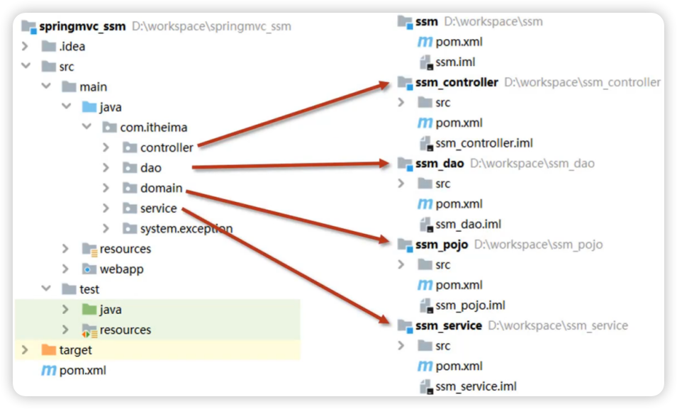这样的话，项目中的每一层都可以单独维护，也可以很方便的被别人使用。
分模块开发实现
这里就基于SSM整合的项目来实现对项目的拆分。
环境准备（之前ssm整合的框架）
抽取domain层
步骤1：创建新模块maven_03_pojo
步骤2：项目中创建domain包，将Book实体类复制进来
步骤3：删除原项目(maven_02_ssm)中的domain包
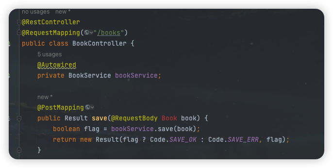
这时在原项目中用到Book实体类的地方都会出现报错。解决问题的办法是在maven_02_ssm中添加maven_03_pojo的依赖。
步骤4：建立依赖关系
在maven_02_ssm项目的pom.xml添加maven_03_pojo的依赖
1 | <dependency> |
步骤5：编译maven_02_ssm模块
这时虽然不再报错了，但是不意味着程序可以正常运行。报错提醒我们在maven_02_ssm模块中找不到maven_03_pojo的jar包：
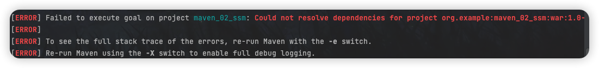
那么为什么找不到呢？因为Maven会从本地仓库找对应的jar包，但是本地仓库又不存在该jar包，所以我们需要手动将maven_03_pojo项目安装到本地仓库即
可。
步骤6：将项目安装到本地仓库
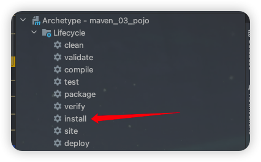
此时maven_02_ssm模块就可以编译成功了。
抽取dao层
步骤1：创建新模块并在项目中创建dao包
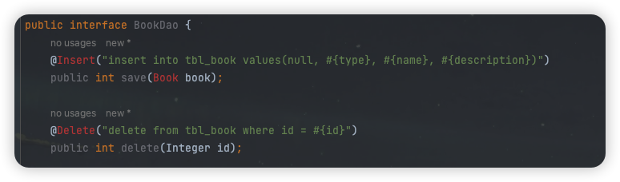
这时候存在两个问题：
1）实体类Book类不存在：添加maven_03_pojo的依赖
1 | <dependency> |
2）Mybatis在dao层的增删改查注解无法识别：添加mybatis和mysql依赖
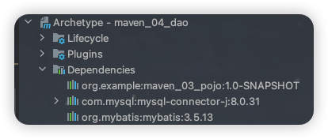
步骤2：删除原项目(maven_02_ssm)的dao包，添加maven_04_dao的依赖
分模块开发总结
1、创建Maven模块
2、书写模块代码
分模块开发需要先针对模块功能进行设计，再进行编码。不会先将工程开发完毕，然后进行拆分。拆分方式可以按照功能拆也可以按照模块拆。
3、通过maven指令安装模块到本地仓库(install 指令)
依赖管理
依赖指当前项目运行所需的jar，一个项目可以设置多个依赖。在其他项目中想要使用独立出来的这些模块，只需要在其pom.xml使用标签来进行jar包的引入即可。
依赖的格式：
1 | <dependencies> |
依赖传递与依赖冲突问题
依赖传递
这个jar包下面还包含有其他的jar包：
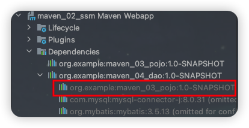
会发现有两个maven_03_pojo的依赖被加载到Dependencies中，那么maven_04_dao中的maven_03_pojo能不能使用呢？答案是可以的。
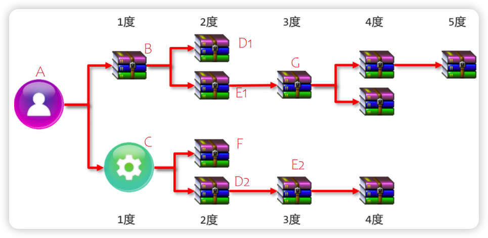A依赖了B和C，B和C又分别依赖了其他jar包，所以在A项目中就可以使用上面所有jar包，这就是所说的依赖传递。
依赖传递有直接依赖和间接依赖（相对的概念）：相对于A来说，A直接依赖B和C，间接依赖了D1,E1,G,F,D2和E2。
依赖冲突
因为有依赖传递的存在，就会导致jar包在依赖的过程中出现冲突问题。这里所说的依赖冲突是指项目依赖的某一个jar包，有多个不同的版本，因而造成类包版本冲突。
情况一：当同级配置了相同资源的不同版本，后配置的覆盖先配置的。
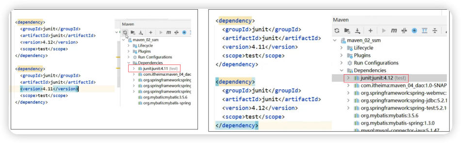
情况二：当依赖中出现相同的资源时，层级越深，优先级越低，层级越浅，优先级越高。
情况三：当资源在相同层级被依赖时，配置顺序靠前的覆盖配置顺序靠后的。
关于依赖冲突的规则我们不需要记住，可以在面板上查看详细的依赖关系包括版本信息等：
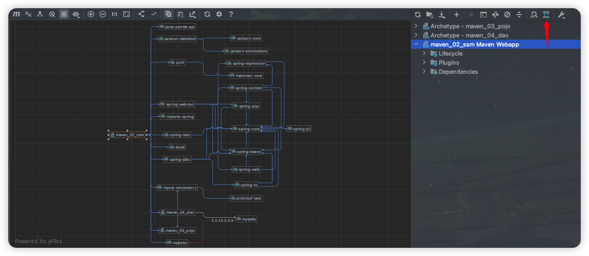可选依赖和排除依赖
maven_02_ssm 依赖了 maven_04_dao，maven_04_dao 依赖了 maven_03_pojo，因为现在有依赖传递，所以maven_02_ssm能够使用到maven_03_pojo的内容。但是如果说现在不想让maven_02_ssm依赖到maven_03_pojo，有哪些解决方案?
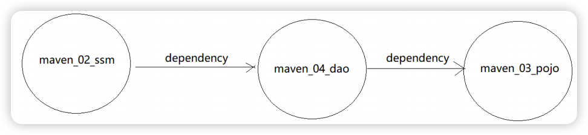方案一：可选依赖
可选依赖指对外隐藏当前所依赖的资源。
对于我们的需求是：不想让maven_02_ssm依赖到maven_03_pojo。我们可以在maven_04_dao的pom.xml中在引入maven_03_pojo的时候，添加optional从而切断依赖传递。
1 | <dependency> |
方案二：排除依赖
排除依赖指主动断开依赖的资源，被排除的资源无需指定版本。
前面我们已经通过可选依赖实现了阻断maven_03_pojo的依赖传递。对于排除依赖，则是maven_02_ssm项目中已经通过依赖传递用到了maven_03_pojo，此时我们需要做的是将其进行排除。
1 | <dependency> |
A依赖B，B依赖C，C通过依赖传递会被A使用到，现在要想办法让A不去依赖C：
可选依赖是在B上设置
<optional>， A不知道有C的存在；排除依赖是在A上设置
<exclusions>，A知道有C的存在，主动将其排除掉。
聚合和继承
聚合
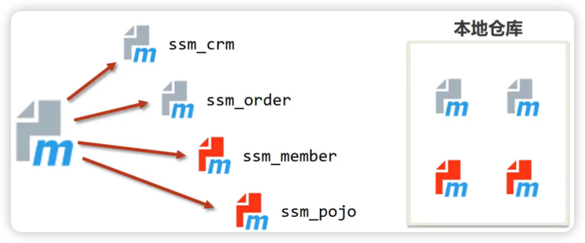缺点一：分模块开发后，需要将这几个项目都安装到本地仓库，目前我们只能通过项目Maven面板的install来安装，并且需要安装多个，如果我们的项目足够多，那么一个个安装起来还是比较麻烦的。
缺点二：如果几个项目都已经安装成功，当ssm_pojo发生变化后，我们就得将ssm_pojo重新安装到maven仓库，但是为了确保我们对ssm_pojo的修改不会影响到其他项目模块，我们需要对所有的模块进行重新编译。
解决方案：所以我们就想能不能抽取一个项目，把所有的项目管理起来，以后我们要想操作这些项目，只需要操作这一个项目，这就用到了我们接下来要讲解的聚合——将多个模块组织成一个整体，同时进行项目构建的过程称为聚合。聚合工程通常是一个不具有业务功能的空工程（有且仅有一个pom文件）。
当工程中某个模块发生更新（变更）时，必须保障工程中与已更新模块关联的模块同步更新，此时可以使用聚合工程来解决批量模块同步构建的问题。
步骤1：创建一个空的Maven工程
步骤2：将项目的打包方式改为pom
1 | <groupId>org.example</groupId> |
目前我们接触到的项目打包方式有三种：
① jar：默认情况，说明该项目为java项目； ② war：说明该项目为web项目； ③ pom：说明该项目为聚合或继承项目。
步骤3：pom.xml添加所要管理的项目
1 | <!--设置管理的模块名称--> |
步骤4：使用聚合统一管理项目
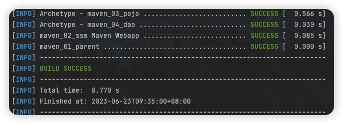
测试发现，当maven_01_parent的compile被点击后，所有被其管理的项目都会被执行编译操作，这就是聚合工程的作用。
说明：聚合工程管理的项目在进行运行的时候，会按照项目与项目之间的依赖关系来自动决定执行的顺序，和配置的顺序无关。
继承
接下来我们再来考虑多模块开发存在的另外一个问题，依赖的重复配置。
问题一：spring-webmvc、spring-jdbc在三个项目模块中都有出现，这样就出现了重复的内容；
问题二：spring-test只在部分项目模块中出现，而在某些项目模块中没有出现，这里是部分重复的内容；
问题三：我们使用的spring版本目前是5.2.24.RELEASE ,假如后期要想升级spring版本，所有跟Spring相关jar包都得被修改，涉及到的项目越多，维护成本越高。
面对上面的这些问题，我们就得用到接下来要学习的继承（简化配置、减少版本冲突）：描述的是两个工程间的关系，与java中的继承相似，子工程可以继承父工程中的配置信息，常见于依赖关系的继承。
步骤1：创建一个空Maven工程并将打包方式设置为pom
步骤2：在子项目中设置其父项目
java里面的继承，也是在子类声明它继承的父类。
1 | <parent> |
步骤3：优化子项目共有依赖导入问题
1）将子项目共同使用的jar包都抽取出来，维护在父项目的pom.xml中
2）删除子项目中已经被抽取到父项目的pom.xml中的jar包，如在maven_02_ssm的pom.xml中将已经出现在父项目的jar包删除掉
将子项目中的公共jar包抽取到父工程中进行统一添加依赖，这样做的可以简化配置，并且当父工程中所依赖的jar包版本发生变化，所有子项目中对应的jar包版本也会跟着更新。
步骤4：优化子项目依赖版本问题
如果把所有用到的jar包都管理在父项目的pom.xml，看上去更简单些，但是这样就会导致有很多项目引入了过多自己不需要的jar包。
那针对于这种部分项目有的jar包，我们该如何管理优化呢?
在父工程mavne_01_parent的pom.xml来定义依赖管理<dependencyManagement>
1 | <!-- 定义依赖管理--> |
<dependencyManagement>标签不真正引入jar包，而是配置可供子项目选择的jar包依赖。子项目要想使用它所提供的这些jar包，需要自己添加依赖，并且不需要指定<version> 。
这样做的好处就是当父工程dependencyManagement标签中的版本发生变化后，子项目中的依赖版本也会跟着发生变化。
继承总结：父工程主要是用来快速配置依赖jar包和管理项目中所使用的资源
1）将所有项目公共的jar包依赖提取到父工程的pom.xml中，子项目就可以不用重复编写，简化开发
2）将所有项目的jar包配置到父工程的dependencyManagement标签下，实现版本管理，方便维护
聚合和继承的区别
聚合和继承的区别
聚合用于快速构建项目，对项目进行管理；继承用于快速配置和管理子项目中所使用jar包的版本。
聚合和继承的相同点
- 聚合与继承的pom.xml文件打包方式均为pom，可以将两种关系制作到同一个pom文件中
- 聚合与继承均属于设计型模块，并无实际的模块内容
聚合和继承的不同点
- 聚合是在当前模块中配置关系
<modules>，聚合可以感知到参与聚合的模块有哪些 - 继承是在子模块中配置关系
<parent>，父模块无法感知哪些子模块继承了自己
- 聚合是在当前模块中配置关系
IDEA构建聚合与继承工程
步骤1：创建一个空的Maven项目，可以将项目中的src目录删除掉，这个项目作为聚合工程和父工程
步骤2：创建子项目，该项目可以继承并聚合父工程。
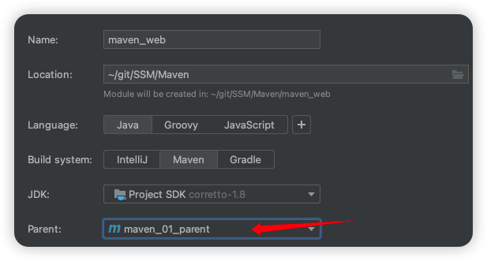属性
属性
如果我们现在想更新Spring的版本，你会发现我们依然需要更新多个jar包的版本，这样的话还是有可能出现漏改导致程序出问题，而且改起来也是比较麻烦。我们可以参考咱们java基础所学习的变量，声明一个变量，在其他地方使用该变量，当变量的值发生变化后，所有使用变量的地方，就会跟着修改。
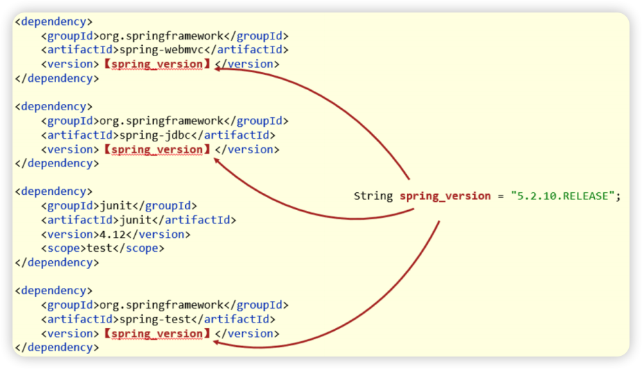步骤1：父工程中定义属性
1 | <properties> |
步骤2：修改依赖的version
1 | <dependencies> |
我们只需要更新父工程中properties标签中所维护的jar包版本，所有子项目中的版本也就跟着更新。当然除了将spring相关版本进行维护，我们可以将其他的jar包版本也进行抽取，这样就可以对项目中所有jar包的版本进行统一维护。
配置文件的属性加载
想让Maven对于属性的管理范围能更大些，比如我们之前项目中的jdbc.properties，这个配置文件中的属性，能不能也来让Maven进行管理呢？
步骤1：父工程定义属性
1 | <properties> |
步骤2：jdbc.properties文件中引用属性
在jdbc.properties，将jdbc.url的值直接获取Maven配置的属性.
1 | jdbc.url=${jdbc.url} |
步骤3：设置maven过滤文件范围
Maven在默认情况下是从当前项目的”src\main\resources”下读取文件进行打包。现在我们需要打包的资源文件是在maven_02_ssm下,需要我们通过配置来指定下具体的资源目录。
1 | <build> |
步骤4：测试是否生效
测试的时候，只需要将maven_02_ssm项目进行打包，然后观察打包结果中最终生成的内容是否为父工程中Maven配置的内容。
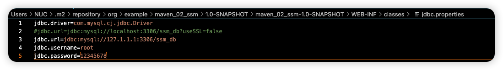
如果不只是maven_02_ssm项目需要有属性被父工程管理，如果有多个项目需要配置，该如何实现呢？
方式一：使用多个<resource>标签在下面继续配置；
方式二：${project.basedir}，当前项目所在目录。子项目继承了父项目， 相当于所有的子项目都添加了资源目录的过滤：
1 | <build> |
上面我们所使用的都是Maven的自定义属性，除了
${project.basedir}，它属于Maven的内置系统属性。
多环境配置与应用
多环境开发
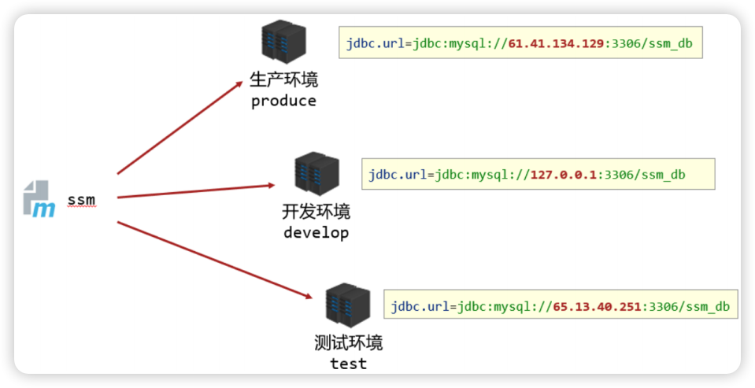不同环境的配置是不相同的，如不可能让三个环境都用一个数据库，所以就会有三个数据库的url配置，要想实现不同环境之间的配置切换又该如何来实现呢？
Maven提供配置多种环境的设定，帮助开发者在使用过程中快速切换环境。
步骤1：父工程配置多个环境，并指定默认激活环境：
1 | <!-- 多开发环境配置 --> |
虽然已经能够实现不同环境的切换，但是每次切换都是需要手动修改，如何来实现在不改变代码的前提下完成环境的切换呢?
步骤2：命令行实现环境切换（这里我反正是测试失败了。。。）
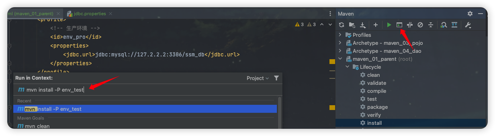跳过测试
前面在执行install指令的时候，Maven都会按照顺序从上往下依次执行，每次都会执行test，对于test来说有它存在的意义：可以确保每次打包或者安装的时候，程序的正确性。但是有时候，功能开发过程中有部分模块还没有开发完毕，测试无法通过，但是想要把其中某一部分进行快速打包，此时由于测试环境失败就会导致打包失败。
方式一：IDEA工具
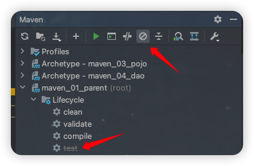
方式二：命令行跳过测试
1 | mvn 指令 -D skipTests |
该命令可以不借助IDEA，直接使用cmd命令行进行跳过测试，需要注意的是cmd要在pom.xml所在目录下进行执行。
私服
公司或者团队一般会搭建自己的私服，这里暂时先不展开实践了，就简单了解一下什么是私服以及配置私服的原理。
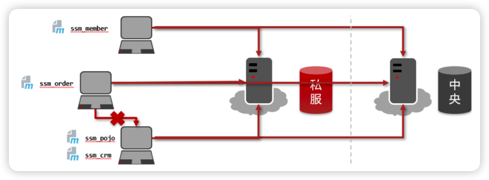Maven的中央仓库不允许私人上传自己的jar包，那么自己搭建一个类似于中央仓库的东西，把自己的内容上传上去，其他人就可以从上面下载jar包使用。私服就是公司内部搭建的用于存储Maven资源的服务器，用于解决团队内部的资源共享与资源同步问题。
搭建Maven私服的方式有很多，其中一种使用量比较大的实现方式：Nexus。